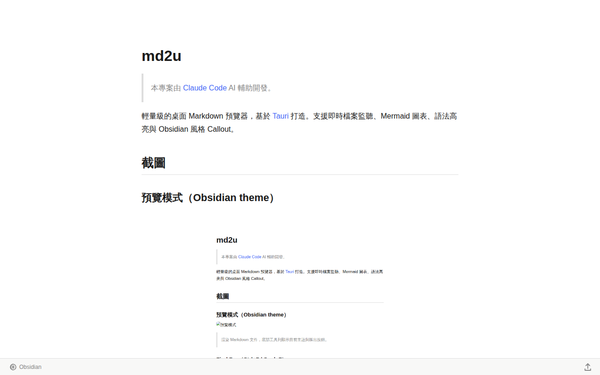
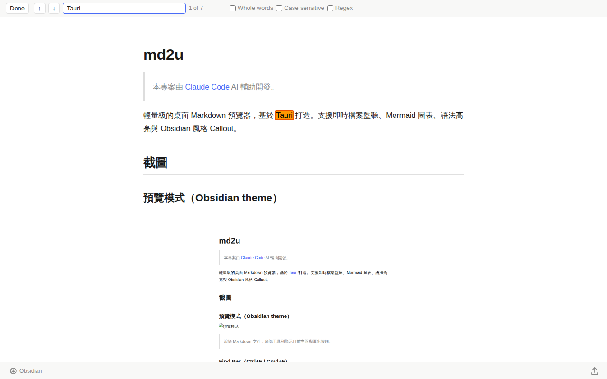
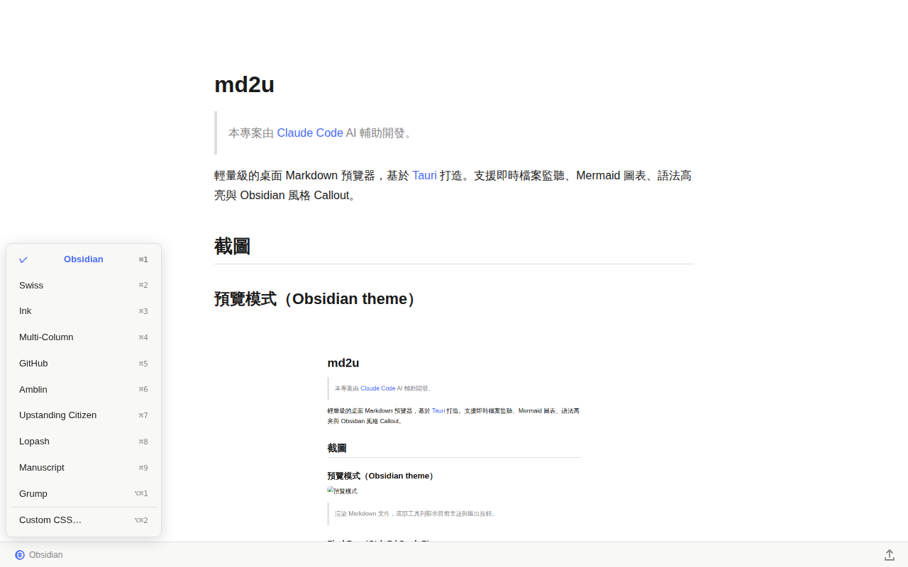
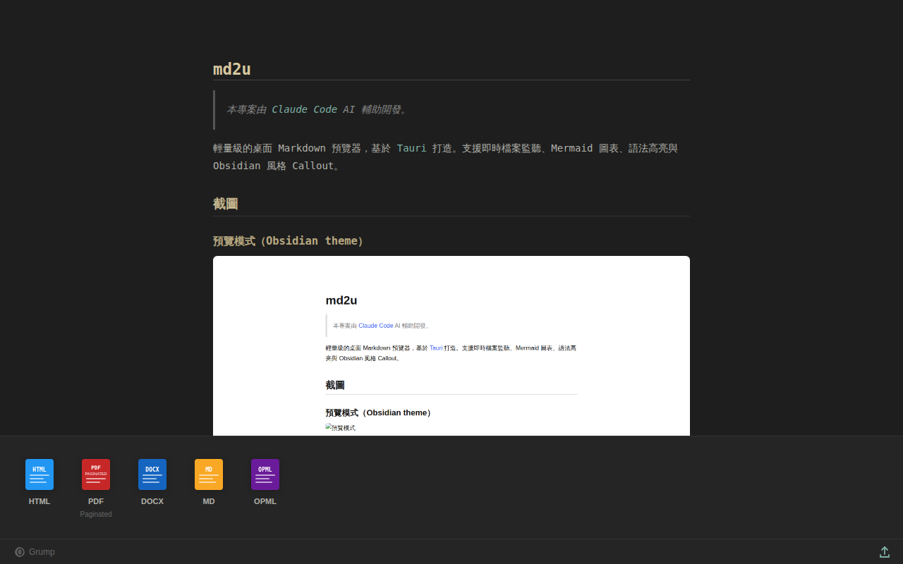

輕量、快速、開源的桌面 Markdown 預覽器，預設採用 Obsidian 渲染引擎
支援 Windows · Linux · macOS（等註冊蘋果開發者資金到位）

市面上的 Markdown 工具，不是只有 macOS 能用，就是太重、太醜、閉源
Windows 11 內建記事本雖然支援 Markdown，但渲染品質粗糙，字型、間距、程式碼區塊全都差強人意，用來 review 文件根本是折磨。
Marked2 是 macOS 上公認最優秀的 Markdown 預覽器，主題豐富、匯出強大。但換到 Windows 或 Linux 就完全失去這個體驗。
VS Code、Typora、Obsidian 功能強大但啟動慢、記憶體占用高。你只是想快速預覽一個 .md 檔，不需要一個完整的編輯器生態系。
許多跨平台 Markdown 工具是閉源的，功能受限、更新慢，甚至要訂閱付費。出了問題無法自己修，只能等官方回應。
雙擊 PDF，畫面清晰乾淨，字型、排版、圖表一目瞭然。雙擊 .md，卻只看到一堆 #、**、``` 符號。同樣是文件，待遇卻天差地別。
marked2u — 基於 Tauri 打造的跨平台 Markdown 預覽器，
預設採用與 Obsidian 相同的渲染引擎，輕量開源，Windows / Linux 都能用，
終於不用在 macOS 和其他平台之間做出妥協。
不多餘、不臃腫，專注在 Markdown 預覽這件事上做到最好
拖曳 .md 檔案到視窗，或命令列 marked2u file.md，立即渲染，儲存後自動更新。
內建 Obsidian、GitHub、Swiss、Ink、Multi-Column、Grump 等主題，支援 Custom CSS 自訂，⌘1–⌘9 快速切換。
Ctrl+F / Cmd+F 開啟 Find Bar，螢光筆即時標示，支援 Whole words、Case sensitive、Regex。
直接在 Markdown 中渲染流程圖、時序圖、甘特圖等，export 時 SVG 完整保留。
支援 HTML（含 CDN）、PDF（A4 分頁）、DOCX、MD、OPML，點圖示即可匯出。
採用 PolyForm Noncommercial License，個人與非商業用途完全免費，原始碼在 GitHub 公開，歡迎 PR。Release 由 CI 自動 build 並掃毒驗證後發布。
乾淨、清晰，跟你在 Obsidian 看到的一模一樣



免費下載，開源，無需帳號
所有 Release 由 GitHub Actions 自動編譯並完成 ClamAV / Windows Defender 掃毒驗證。
查看 Build Log ·
原始碼 ·
PolyForm Noncommercial License